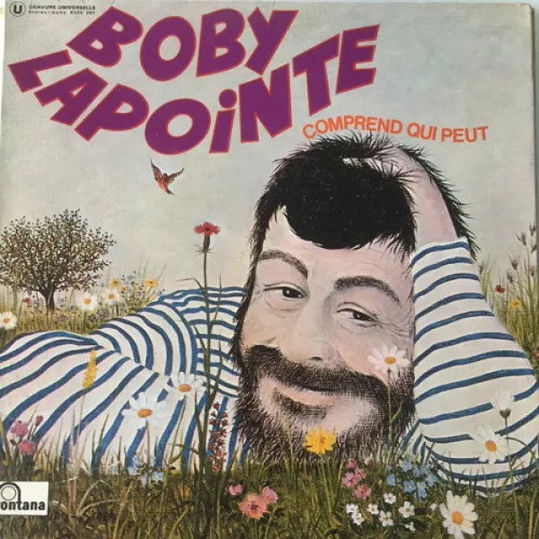

Comprend qui peut
Au début, j’ai eu du mal. Vraiment. Cette manière de chanter, les orchestrations légères, les mots qui rebondissent partout : j’avais l’impression d’écouter de la musique pour enfant. Puis Bobo Léon m’a fait rire.
À partir de là, quelque chose s’est déplacé. J’ai commencé à entendre la musique moins comme un décor à juger pour lui-même que comme une mécanique au service de l’humour. Chez Boby Lapointe, tout semble réglé pour préparer une chute, souligner un double sens, rendre un mot plus absurde. Sur Saucisson de cheval, le simple « hue hue hue hue » du refrain m’a fait rire comme un idiot. Pris isolément, c’est presque rien. Dans le morceau, c’est parfaitement placé.
Comprend qui peut m’a aussi surpris par sa manière de parler de sexe sans vraiment en parler. Les sous-entendus sont partout, mais jamais appuyés. C’est grivois sans être lourd, malin sans devenir gênant. La blague n’est jamais expliquée : il faut la reconstruire soi-même.
Plus l’album avançait, plus j’avais l’impression d’écouter un type complètement enfermé dans son propre monde.
Et ce monde peut devenir franchement sombre. Sentimental bourreau est glauque, mais il parvient à rendre ça drôle. L’Idole et l’enfant, à l’inverse, m’a laissé un vrai malaise : les paroles sont ambiguës, étranges, presque inquiétantes, tout en restant très bien écrites. Chez lui, on ne sait jamais exactement où finit la blague et où commence quelque chose de plus trouble.
Le moment le plus improbable arrive peut-être sur Andréa c’est toi. L’idée de faire réagir une voix parlée à une ligne presque opératique est déjà très drôle. Mais à la fin, la diction devient hachée, syncopée, presque percussive. Avec mes oreilles d’aujourd’hui, j’ai eu un réflexe immédiat : on dirait du rap. Évidemment, historiquement ce n’en est pas. Mais cette manière de traiter les syllabes comme du rythme plutôt que comme une simple mélodie m’a vraiment surpris.
C’est là que je reconnais complètement son génie. Il a une façon très personnelle de tordre la langue, de faire claquer les mots, de passer du théâtre à l’absurde puis à l’humour noir sans prévenir. Je ne vois pas vraiment d’équivalent direct.
Et pourtant, finir l’album m’a épuisé.
La raison est assez simple : musicalement, ce n’est pas du tout mon terrain naturel. Le versant chanson populaire, variété théâtrale, accompagnements très légers me laisse souvent à distance. Comme le plaisir vient surtout du texte, je dois rester constamment attentif. Il n’y a presque jamais de moment où je peux simplement me laisser porter par la musique.
Si je devais séparer les deux choses, je donnerais probablement 7/10 à l’univers, au théâtre, à l’humour et à l’écriture, et autour de 4/10 à mon plaisir purement musical. Ce qui donne une note finale assez étrange, mais finalement assez juste : 5,5/10.
Ce n’est absolument pas un disque que je trouve moyen. C’est plutôt un disque dont je peux penser que l’auteur est génial tout en sachant que je n’ai pas très envie de le réécouter en entier.
Je termine lessivé, mais avec l’impression d’avoir rencontré quelqu’un.